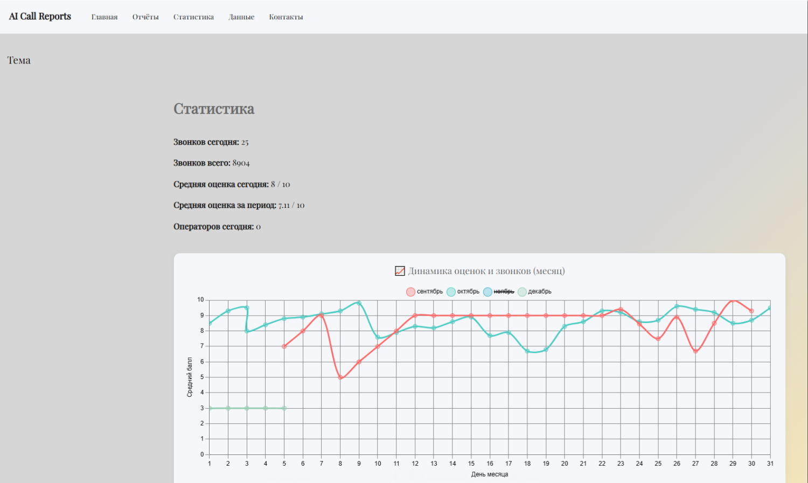
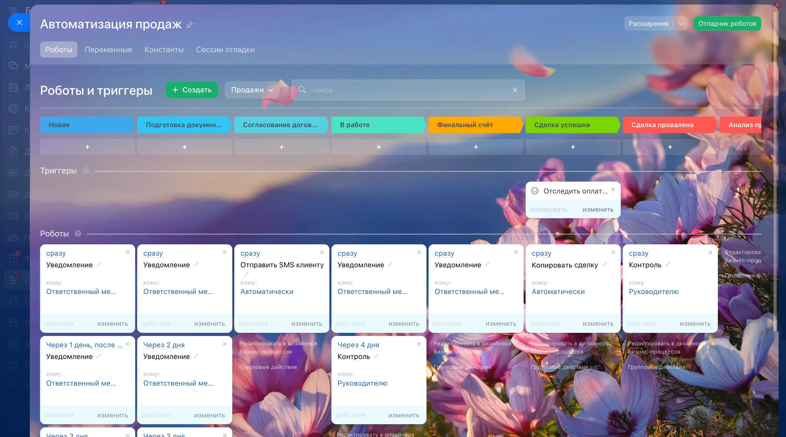
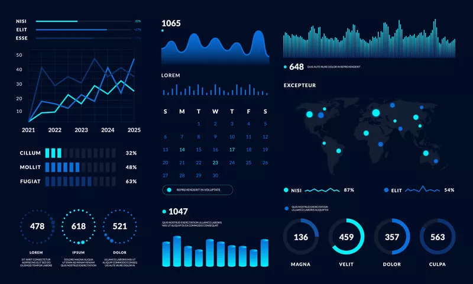

AI-аудит звонков: чек-листы, метрики, PDF/Telegram отчёты
Автоматический анализ звонков по чек-листам с отчётами в PDF и Telegram. Метрики по операторам и динамика за день/месяц.
Сильные стороны:

Автоматический анализ звонков по чек-листам с отчётами в PDF и Telegram. Метрики по операторам и динамика за день/месяц.
RAG-боты с векторной базой знаний и интеграциями в бизнес-системы. Отвечают по корпоративным материалам точно и безопасно.
ИИ-агент собирает новости из десятков источников, анализирует и публикует в Telegram в виде кратких сводок.

Руководитель просто говорит задачу — ИИ формирует JSON и создаёт задачу в CRM с приоритетом и сроками.

Реализованы сложные бизнес-процессы в Bitrix24: увольнение, найм, согласования и уведомления.
Бот для сбора отзывов и выдачи бонусов клиентам. Позволяет улучшить качество сервиса и лояльность.
Полный список кейсов доступен по запросу. Могу быстро подготовить демо под вашу предметную область.
Bitrix24 (коробка), AI-инициативы (RAG-боты, аудит звонков), интеграции, отчёты.
Анализ, проектирование и тестирование интеллектуальных решений на базе нейросетей и автоматизаций.
Разработка лендингов, настройка автоматизаций, сбор требований и реализация небольших веб-проектов.
Опыт работы в фармацевтическом производстве, логистике, управлении процессами и анализе данных.
Но готов рассмотреть гибридный график на время спытательного срока
Но также рассматриваю проектную работу
Готов сделать тестовое задание или показать готовые проекты